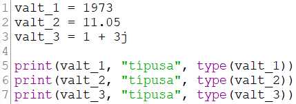
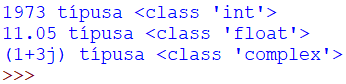
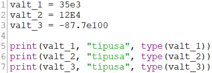
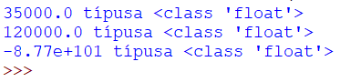
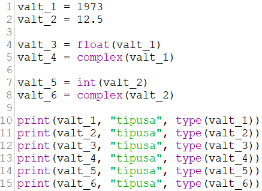
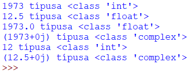
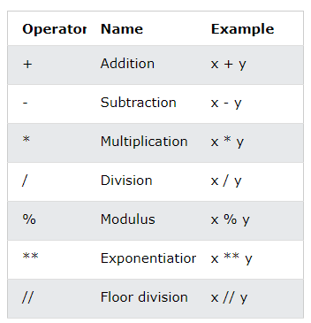
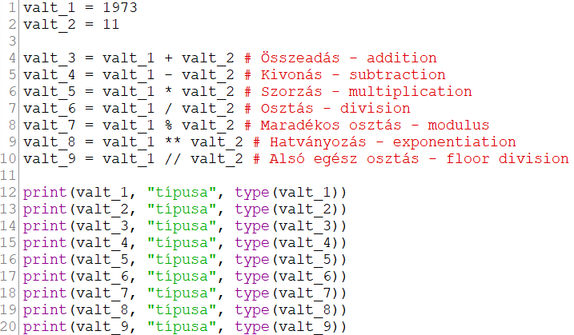
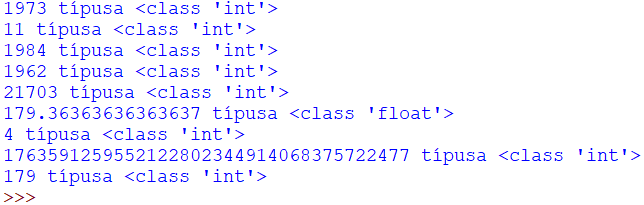

A Python-ban három szám típus van:
int-egész szám
float-lebegőpontos szám complex-komplex
szám
A type() függvényt használjuk, hogy ellenőrizzük
a változó típusát.

A fenti kód eredménye.

Az int-egész szám (integer) lehet pozitív,
negatív vagy 0 tizedesjegy nélkül.
Nincs alsó és felső határ a Python-ban az
értékekre.
A float-lebegőpontos szám lehet pozitív, negatív
vagy 0.0 egy vagy több tizedesjeggyel.
Az egészt rész a tört résztől ponttal (.)
választjuk el.
Nincs alsó és felső határ a Python-ban az
értékekre.
Az e vagy E szimbolumokkal tudományos jelölést
használhatunk.

A fenti kód eredménye.

A complex-szám a képzetes rész jelöléséhez a
j-betűt használja. Nem fogjuk használni!
Néha szükséges lehet az egyik típusú számot
átalakítani egy másikra, mert csak így tudunk
vele dolgozni.
Lehetséges átalakítások, konverziók: int
=> float
int => complex
float => int
float => complex
Ehhez az adott típus konstruktor függvényét
használja. Ezek különböző egész szám és
lebegőpontos szám literálokat, vagy azokat
tartalmazó változókat fogadnak paraméterként!
A komplex számokat nem lehet átalakítani!

A fenti kód eredménye.

Nagyon sokszor hasznos lesz a számunkra, hogy
karakterláncsorozatot is át tudunk alakítani
számmá!
Adjunk meg 10 egész és 10 lebegőpontos számot és 10 számot
reprezentáló karakterláncsorozatot! Alakítsuk át őket minden
lehetséges módon!
Aritmetikai operátorok

A számokkal műveleteket (operation) szeretnénk
végrehajtani. Ezekhez operandusként számokból
képzett változókat és/vagy literálokat
használunk. A műveleti jeleket nevezzük
aritmetikai operátoroknak.

A fenti kód eredménye.

Az úgynevezett rövidített értékadás során egy
váltó értékét változtatjuk meg az adott szám
értékét, és adjuk vissza a változónak ezt a
módosított értéket!
Ehhez a hozzárendelés (assignment) operátorát
(=) dolgozzuk át egy kicsit.